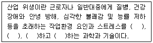
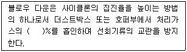

산업위생관리산업기사 (2006-03-05 기출문제)
1과목: 산업위생학 개론
1. 작업대사율(RMR)을 알맞게 표시한 것은?
- 작업에 소요된 열량 – 안정시 열량 / 기초 대사량
- 작업에 소요된 열량 – 기초 대사량 / 기초 대사량
- 작업에 소요된 열량 – 안정시 열량 / 안정시 열량
- 작업에 소요된 열량 – 기초 대사량 / 안정시 열량
(정답률: 69%)

2. 소변을 이용한 생물학적 모니터링의 장단점으로 틀린 것은?
- 비파괴적 시료채취가 가능하다.
- 많은 양의 시료확보가 가능하다.
- 비교적 일정한 소변배설량으로 농도보정이 필요 없다.
- 시료채취과정에서 시료가 오염될 가능성이 높다.
(정답률: 71%)
3. 허용농도에 피부(Skin) 표시가 첨부되는 물질이 있다. 다음 피부표시를 첨부하는 경우가 아닌 것은?
- 옥탄올-물-분배계수가 낮은 물질인 경우
- 반복하여 피부에 도포했을 때 전신작용을 일으키는 물질인 경우
- 손이나 팔에 의한 흡수가 몸전체 흡수에 지대한 영향을 주는 물질인 경우
- 급성 동물중독 실험결과 피부흡수에 의한 치사량(LD50)이 비교적 낮은 물질인 경우
(정답률: 59%)
4. 작업자의 체격과 숙련도, 작업환경에 따라 피로를 가장 적게 하고 생산량을 최고로 올릴 수 있는 경제적인 작업속도는?
- 단위속도
- 지적속도
- 생산속도
- 균형속도
(정답률: 60%)
5. 다음 내용은 미국산업위행학회(AIHA)의 산업 위생에 대한 정의이다. 빈칸의 내용이 올바르게 연결된 것은?

- 예측, 측정, 평가, 관리
- 측정, 평가, 관리, 보상
- 예방, 치료, 재활, 보상
- 치료, 재활, 관리, 보상
(정답률: 85%)
6. 어떤 근로자가 물체운반작업을 하고 있다. 1일 8시간작업을 위한 작업대사량이 5.3㎉/분, 해당 작업의 작업대사량은 6㎉/분, 휴식시의 대사량은 1.3㎉/분이라면 Hertig의 식을 이용한 적절한 휴식시간 비율(%)은?
- 약 15%
- 약 20%
- 약 25%
- 약 30%
(정답률: 39%)
7. 100명의 근로자가 작업하는 공장에서 1년 동안 3건의 재해가 발생하였다면 도수율은?(단, 1일 8시간 근무, 연간 평균 300일 근로기준)
- 12.5
- 15.5
- 20.5
- 25.5
(정답률: 74%)
8. 산업피로에 관한 설명으로 알맞지 않은 것은?
- 고단하다는 객관적이고 보편적인 느낌이다.
- 작업강도에 반응하는 육체적, 정신적 생체현상이다.
- 피로 자체는 질병이 아니라 가역적인 생체변화이다.
- 피로가 오래되면 얼굴 부종, 허탈감의 증세가 온다.
(정답률: 73%)
9. 근육노동에 있어서 특히 보급해야할 비타민은?
- 비타민 A
- 비타민 B1
- 비타민 B6
- 비타민 C
(정답률: 79%)
10. 금속이 용해되어 액상물질로 되고 이것이 가스상 물질로 기화된 후 다시 응축되어 고체입자로 된 것은?
- 흄(fume)
- 안개(fog)
- 스모그(smog)
- 에어러졸(aerosol)
(정답률: 84%)
11. 독일의 의사이자광물학자인 그는 저서 『광물에 대하여』에서 광업에 관련된 유해성을 언급하였으며, 이 저서는 1912년 hoover (후에 미국 대통령이 됨)부부에 의해 번역되기도 한 사람은?
- Georgius Agricola
- Philippus Paracelsus
- Pliny the Elder
- Bernardino Ramazzini
(정답률: 23%)
12. 실동율이 76~67%이며 총작업시간 중 대사율이 1.5~2.7 범위인 작업강도는?
- 경작업
- 중등(中等)작업
- 강작업
- 중(重)작업
(정답률: 18%)
13. 우리나라 산업위행의 역사에 관한 내용으로 틀린 것은?
- 1953년 - 근로기준법 제정
- 1990년 - 한국산업위생학회 창립
- 1963년 - 대한산업보건협회 창립
- 1977년 - 산업안전보건법 공포
(정답률: 53%)
14. 재해율의 종류 중 '천인률'에 관한 설명으로 알맞지 않은 것은?
- 일정기간 동안에 근로자 1000명에 대하여 발생한 재해자 수로 정의한다.
- 근무시간이 다른 타 업종간의 비교가 용이하다.
- 각 사업장 간의 재해 상황을 비교하는 자료로 활용된다.
- 천인율=(재해자수/평균근로자수)×1000
(정답률: 65%)
15. Toluene의 경우 1일 8시간 작업기준 허용농도가 100ppm이다. 1일 10시간 작업을 할 때 Brief 와 Scala의 보정방법으로 허용농도를 보정하면 얼마가 되는가?
- 60ppm
- 70ppm
- 80ppm
- 90ppm
(정답률: 50%)
16. 산업위생통계에서 적용되는 '우발오차' 에 관한 내용으로 틀린 것은?
- 보정할 수 있다.
- 계통오차와 달리 제거할 수 없다.
- 한 가지 실험측정을 반복할 때 측정값들의 변동으로 발생되는 오차를 말한다.
- 우발오차가 작을 때는 정밀하다고 말한다.
(정답률: 39%)
17. 바람직한 교대제에 대한 설명으로 알맞지 않는 것은?
- 각 반의 근무시간은 8시간씩으로 한다.
- 야간 후 다음 반으로 가는 간격은 최저 48시간을 가지도록 한다.
- 야근근무의 연속은 일주일(5-7일)정도가 좋다.
- 2교대면 최저 3조의 정원을 그리고 3교대면 4조 편성으로 한다.
(정답률: 87%)
18. 근로자가 약한 손의 힘의 평균이 45kg라고 한다. 이 근로자가 무게 20kg인 물체를 두손으로 들어 올릴 경우 작업강도(%MS)는?
- 11.1
- 22.2
- 33.3
- 44.4
(정답률: 67%)
19. 톨루엔(분자량: 92) 100ppm은 몇 mg/m3인가? (단, 25℃, 1기압일 경우)
- 336
- 376
- 392
- 410
(정답률: 74%)
20. 수족신경마비, 시신경장해, 정신이상, 보행장해 등을 가져오는 '미나마타병'이란 어떤 금속에 중독되었을 때 나타나는 질병인가?
- Hg
- Pb
- Cr
- Cd
(정답률: 61%)
2과목: 작업환경측정 및 평가
21. 주물사업장의 음압수준이 95dB이고 작업자는 귀마개(NRR=20)를 착용하고 있다. 차음효과는?
- 5.5dB
- 6.5dB
- 7.5dB
- 8.5dB
(정답률: 62%)
22. 여과포집에 적합한 여과재의 조건이 아닌 것은?
- 포집대상 입자의 입도분포에 대하여 포집효율이 높을 것
- 포집시의 흡입저항은 될 수 있는 대로 낮을 것
- 접거나 구부리더라도 파손되지 않고 찢어지지 않을 것
- 될 수 있는 대로 흡습률이 높을 것
(정답률: 62%)
23. 1L의 비누기품미터(soap bubble meter)를 사용하여 공기 시료채취펌프의 유량을 5L/분으로 보정하려고 한다. 비누거품이 1L를 통과하는 시간을 몇 초로 맞추어야 하는가?
- 35초
- 24초
- 12초
- 6초
(정답률: 62%)
24. 실리카겔이 활성탄에 비해 갖는 장ㆍ단점으로 틀린 것은?
- 수분을 잘 흡수하는 단점을 가지고 있다.
- 활성탄으로 채취가 어려운 아닐린, 오르쏘-툴루이딘 등의 아민류나 몇몇 무기물질의 채 취가 가능하다.
- 추출액이 화학분석이나 기기분석에 방해물질로 작용하는 경우가 많다.
- 이황화탄소를 주탈착용매로 사용하지 않는다.
(정답률: 39%)
25. 산업안전보건법에 규정되어 있는 작업환경 측정과 관련된 내용 중 틀린 것은?
- 측정은 원칙적으로 1일 작업시간 동안 6시간 이상 연속 측정하거나 작업시간을 등간격 으로 나누어 6시간 이상 연속분리 측정하여야 한다.
- 호흡성분진은 분립장치 또는 호흡성분진을 채취할 수 있는 기기를 이용한 여과 채취방 법으로 측정한다.
- 용접흄은 여과채취방법으로 측정하되 용접보안면을 착용한 경우에는 그 내부에서 채취 하고 중량분석방법과 원자흡광분광기 또는 유도결합플라스마를 이용한 분석방법으로 측 정한다.
- 석면분진의 농도는 여과포집법에 의한 중량분석방법으로 측정한다.
(정답률: 39%)
26. 누적소음노출량 측정기를 사용하여 소음을 측정코자 할 때 우리나라 기준에 맞는 Threshold Level 및 Exchange rate는? (단, A특성 보정, 초과여부를 판단하기 위한 경우)
- 80dB, 3dB
- 90dB, 3dB
- 80dB, 5dB
- 90dB, 5dB
(정답률: 36%)
27. 여러 가지 금속을 동시에 분석할 때 사용하는 분석기기로 가장 적절한 것은?
- ICP
- AAS
- GC
- HPLC
(정답률: 35%)
28. 검지관 사용서 단점이라 볼 수 없는 것은?
- 밀폐공간에서 산소부족 또는 폭발성 가스 측정에는 측정자 안전이 문제된다.
- 민감도 및 특이도가 낮다.
- 각 오염물질에 맞는 검지관을 선정해야하는 불편이 있다.
- 색변화가 선명하지 않아 주관적으로 읽을 수 있어 판독자에 따라 변이가 심하다.
(정답률: 70%)
29. 작업환경 측정기구의 보정을 위한 2차표준에 해당되는 것은?
- Wet-test meter
- 폐활량계
- Pitot 튜브
- '무마찰'피스톤 미터
(정답률: 71%)
30. 분광 광도계(흡광광도 분석기기)를 사용할 때 가시광선 영역에 사용되는 광원은?
- 텅스텐램프
- 중수소방전램프
- 중공음극램프
- 광전증배관
(정답률: 18%)
31. 입자상 물질중의 금속을 채취하는데 사용되는 MCE막 여과지에 관한 설명으로 틀린 것은?
- 산에 쉽게 용해된다.
- 석면, 유리섬유 등 현미경분석을 위한 시료채취에도 이용된다.
- 시료가 여과지의 표면 또는 표면 가까운데 침착된다.
- 흡습성이 낮아 중량 분석에 적합하다.
(정답률: 66%)
32. 옥내 작업환경의 자연습구온도를 측정하여 보니 20℃이었고, 흑구온도를 측정하여 보니 10℃이었으며 건구온도를 측정하여 보니 15℃이었다면 습구흑구 온도지수는?
- 15℃
- 17℃
- 19℃
- 30℃
(정답률: 60%)
33. 빛의 세기 Io의 단색광이 어떤 시료용액을 통과하여 그 공의 20%가 흡수되었을 때 흡광도는?
- 0.1
- 0.3
- 0.5
- 0.7
(정답률: 39%)
34. 일정한 물질에 대해 분석치가 참값에 얼마나 접근하였는가 하는 수치상의 표현은?
- 정확도
- 분석도
- 정밀도
- 대표도
(정답률: 50%)
35. 다음 유기용제물질 중 활성탄관으로 채취하기에 가장 적합하지 않은 것은?
- 에스테르류
- 할로겐화 탄화수소류
- 알코올류
- 방향족 아민류
(정답률: 56%)
36. 다음 중 일반적으로 사용하는 순간시료채취(Grab sampling)기가 아닌 것은?
- 시료채취 백
- 진공 플라스크
- 버블러
- 스테인레스 스틸 캐니스터
(정답률: 47%)
37. 습구온도를 측정하기 위한 자연습구온도계의 측정시간 기준으로 적절한 것은?
- 25분 이상
- 15분 이상
- 10분 이상
- 5분 이상
(정답률: 55%)
38. 먼지 입경에 따른 여과 메카니즘 및 채취효율에 관한 설명으로 틀린 것은?
- 0.1㎛ 미만인 입자는 주로 간섭에 의하여 채취된다.
- 관성출동은 1㎛이상인 입자에서 공기의 면속도가수 cm/sec 이상일 때 중요한 역할을 한다.
- 입자크기는 차단, 관성충돌 등의 메카니즘에 영향을 미치는 중요한 요소이다.
- 0.3㎛인 먼지가 가장 낮은 채취효율을 가진다.
(정답률: 17%)
39. 미국 ACGIH에서 정의한 흉곽성 입자상 물질의 평균입경은?
- 3㎛
- 4㎛
- 5㎛
- 10㎛
(정답률: 56%)
40. 500㎖ 수용액속에 8g의 NaOH가 함유되어 있는 용액의 pH는? (단, Na 원자량 23, 완전해리 기준)
- 13.2
- 13.4
- 13.6
- 13.8
(정답률: 41%)
3과목: 작업환경관리
41. 적용화학물질은 정제 벤드나이드겔, 염화비닐수지이며 분진, 전해약품제조, 원료취급작업에 주용도로 사용하는 보호크림으로 가장 알맞은 것은?
- 친수성크림
- 소수성크림
- 차광크림
- 피막형크림
(정답률: 71%)
42. 소음성난청에서의 영구성 청력손실은 초기에 몇 Hz에서 가장 현저한가?
- 2000Hz
- 3000Hz
- 4000Hz
- 5000Hz
(정답률: 62%)
43. 다음의 소음성 지향성 그림에서 '지향계수'는? (문제오류로 문제 내용이 정확하지 않습니다. 정확한 내용을 아시는분께서는 오류신고를 통하여 내용 작성 부탁드립니다. 정답은 2번입니다.)
- 2
- 4
- 6
- 8
(정답률: 72%)
44. 열중증 질환 중 혈중 C 농도가 현저히 감소하고 혈액농축이 현저하여 수분 및 소금을 보충하여야 하는 것은?
- 열경련
- 열피로
- 열사병
- 열쇠약
(정답률: 39%)
45. 방열복이나 방열장갑에서 복사열을 반사하도록 하기 위해서 가장 많이 사용하는 물질로 안전한 것은?
- 석면
- 플라스틱
- 고무
- 알루미늄
(정답률: 54%)
46. 한랭환경에서 나타나는 증상에 관한 설명으로 틀린 것은?
- 전신체온강하 : 장시간의 한랭포로와 체열상실에 따라 발생되는 만성질환성장해의 일종이다.
- 참호족 : 지속적인 국소의 산소결핍으로 발생한다.
- 동상 : 강렬한 한냉으로 조직장해가 오거나 심부혈관의 변화를 초래하는 장해이다.
- 알러지반응 : 사람에 따라 두드러기, 부종 등의 국소반응을 일으킨다.
(정답률: 32%)
47. 전기장(electric field)와 자기장(magnetic field)에 관한 설명이다. 바르지 않은 것은?
- 전기장은 전기기구에 전압만 걸려 있고 전류가 흐르지 않으면 발생하지 않는다.
- 전기장은 나무, 건물, 사람의 피부에 닿으면 쉽게 약화 또는 차폐된다.
- 자기장은 전류가 흐를 때 흐르는 방향의 수직방향으로 또 다른 힘의 장이 형성되는 것 을 말한다.
- 자기장은 대부분의 물체를 통과하기 때문에 차폐하기 어렵다.
(정답률: 7%)
48. 피조사체 1g에 대하여 100erg의 에너지가 흡수되는 것을 나타내는 단위는?
- rad
- Ci
- rem
- sv
(정답률: 53%)
49. 작업환경 개선을 위한 공학적인 대책과 가장 거리가 먼 것은?
- 환기
- 평가
- 격리
- 대치
(정답률: 56%)
50. 공학적 작업환경관리 대책 중 대치가 적절치 못한 것은?
- 성냥을 만들 때 적린을 백린으로 대치
- 세척작업에서 사염화탄소 대신 트리클로로에틸렌으로 전환
- 주물공정에서 실리카 모래 대신 그린 모래로 주형을 채우도록 대치
- 금속표면을 블라스팅할 때 사용재료로서 모래대신 철구슬을 사용
(정답률: 64%)
51. 방진마스트의 구비조건으로 틀린 것은?
- 여과재 포집효율이 높을 것
- 흡기저항이 높을 것
- 배기저항이 낮을 것
- 착용시 시야확보가 용이할 것
(정답률: 67%)
52. 다음은 진동의 크기를 나타내는 용어중 물체가 정상정지위치에서 일정 시간내에 도달하는 위치까지의 거리로 표현되는 것은?
- 가속도(acceleration)
- 속도(velocity)
- 변위(displacement)
- 공명(resonance)
(정답률: 43%)
53. 염료, 작물, 제지, 화학공업 등에서 주로 노출되며 방광암을 유발하는 것으로 가장 알맞은 것은?
- 카드뮴
- 아크릴로 니트릴
- 벤젠
- 벤지딘
(정답률: 19%)
54. 고압 환경에서 작업하는 사람에게 마취작용(다행증)을 일으키는 가스는?
- 이산화탄소
- 수소
- 질소
- 헬륨
(정답률: 73%)
55. 전리방사선에 감수성이 가장 큰 신체조직은?
- 근육조직
- 뇌조직
- 위장기관
- 조혈기관
(정답률: 36%)
56. 진폐증의 병리적 변화에 따라 구분된 교원성진폐증에 관한 설명으로 틀린 것은?
- 망상섬유로 구성되어 있다.
- 폐포조직의 비가역성변화가 있다.
- 교원성간질반응이 명백하다.
- 규폐증, 석면폐증이 대표적인 예이다.
(정답률: 18%)
57. 방진재 중 금속스프링에 관한 설명으로 틀린 것은?
- 공진시에 전달률이 적다.
- 저주파 차진에 좋다.
- 최대변위가 허용된다.
- 환경요소에 대한 저항성이 크다.
(정답률: 54%)
58. '촉광'에 대한 설명으로 틀린 것은?
- 단위는 룩스(Lux)를 사용한다.
- 지름이 1인치되는 촛불이 수평 방향으로 비칠 때 대략 1촉광의 빛을 낸다.
- 빛의 광도를 나타내는 단위로 국제촉광을 사용한다.
- '1촉광 = 4π루멘'의 관계가 성립한다.
(정답률: 55%)
59. 근골격계질환을 줄이기 위한 작업관리방법이다. 바르지 못한 것은?
- 수공구의 무게는 가능한 한 줄인다.
- 손목, 팔꿈치, 허리가 뒤틀리지 않도록 한다.
- 동일한 자세를 유지하여 작업대사량을 줄인다.
- 작업자가 일에 쫓기지 않도록 작업시간을 조절한다
(정답률: 50%)
60. 자연채광에 관한 설명으로 틀린 것은?
- 창의 방향은 많은 채광을 요구하는 경우는 남향이 좋다.
- 균일한 조명을 요하는 작업실은 북창이 좋다.
- 창의 면적은 벽면적의 15-20%가 이상적이다.
- 실내각점의 개각은 4-5°, 입사각은 28° 이상이 좋다.
(정답률: 44%)
4과목: 산업환기
61. 축류 송풍기에 관한 설명으로 틀린 것은?
- 덕트에 바로 삽입할 수 없어 현장통용성이 떨어진다.
- 최대 송풍량의 70%이하가 되도록 압력손실이 걸릴 경우 서어징 현상을 피할 수 없다.
- 압력손실이 비교적 많이 걸리는 시스템에 사용했을 때 서어징 현상으로 진동과 소음이 심한 경우가 많다.
- 전향 날개형 송풍기와 유사한 특징을 가지고 있다.
(정답률: 25%)
62. 도금조처럼 상부가 개방되어 있고 개방면적이 넓은 경우 어떠한 후드가 적합한가?
- 저유량-고유속 후드
- 슬롯후드
- 캐노피 후드
- push-pull후드
(정답률: 43%)
63. 사무실 직원이 모두 퇴근한 직후인 오후 6시에 측정한 공기중 CO2농도는 1200ppm, 사무실이 빈 상채로 3시간이 경과한 오후 9시에 측정한 CO2농도는 400ppm이었다면 이 사무실의 시간당 공기교환 횟수는? (단, 외부공기 중 CO2농도는 330ppm이라고 가정함)
- 0.68
- 0.84
- 0.93
- 1.26
(정답률: 57%)
64. 방형직관에서 단면길이 a가 0.3m, b가 0.3m일 때 상당직경(equivalent diameter) de는?
- 약 0.3m
- 약 0.4m
- 약 0.5m
- 약 0.6m
(정답률: 54%)
65. 유량이 300m3/min이고 rpm이고 rpm이 500인 송풍기에 필요한 동력이 6HP이다. 이 송풍기의 rpm을 700으로 증가시켰을 때의 동력은?
- 10.4 HP
- 11.8HP
- 14.4 HP
- 16.5HP
(정답률: 42%)
66. ( )안에 알맞은 내용은?

- 5 ~ 10
- 10 ~ 15
- 15 ~ 20
- 20 ~ 25
(정답률: 46%)
67. 일반공업분진(털, 나무부스러기, 대패부스러기, 샌드블라스트, 글라인더분진, 내화벽돌분진)의 일반적인 반송속도(m/sec)로 적절한 것은?
- 10
- 15
- 20
- 25
(정답률: 22%)
68. 덕트에서 공기흐름의 평균 속도압은 25mmH2O였다. 덕트에서의 반송속도(m/sec)는? (단, 공기밀도는 1.21kg/m3)
- 약 15
- 약 20
- 약 25
- 약 30
(정답률: 45%)
69. 오염이 높은 작업장의 실내압으로 알맞은 것은?
- 양압(+)유지
- 음압(-)유지
- 정압유지
- 동압유지
(정답률: 58%)
70. 작업장의 용적이 세로10m, 가로 30m, 높이 6m이고 필요환기량(Q)이 90m3/min이다. 1시간당 공기교환 횟수는?
- 2회
- 3회
- 4회
- 6회
(정답률: 54%)
71. 원형이나 정사각형의 후드인 경우 필요 환기량은 Dalla Valle공식(Q=V(10x2+A))을 활용한다. 이 공식은 오염원에서 후드까지의 거리가 닥트직경의 몇 배 이내일 때만 유효한가?
- 0.5배
- 1.5배
- 2.5배
- 5.0배
(정답률: 32%)
72. 송풍기 설계시 주의사항으로 적합지 아니한 것은?
- 송풍량과 송풍압력을 완전히 만족시켜 예상되는 풍량의 변동범위 내에서 과부하하지 않 고 완전한 운전이 되도록 한다.
- 송풍관의 중량을 송풍기에 가중시키지 않는다.
- 송풍배기의 입자농도와 그 마모성을 참작하여 송풍기의 형식과 내마모구조를 고려한다.
- 송풍기와 배관간에 Flexible bypass를 설치하여 송풍압력의 변동을 감소시킨다.
(정답률: 32%)
73. 온도 150°C, 압력 720mmHg 상태에서 배기가스 체적이 120m3이라면 0°C, 1atm에서 배기가스의 체적은?
- 61.1Sm3
- 73.4Sm3
- 89.2Sm3
- 93.4Sm3
(정답률: 53%)
74. 화씨온도(°F) 단위에서의 절대온도인 랭킨온도(°R)의 상호 호환식으로 적절한 것은?
- °R = °F+430
- °R = °F+460
- °R = °F+480
- °R = °F+490
(정답률: 17%)
75. 닥트직경이 40cm, 공기유속이 30m/sec인 경우 Reynolds수(Re)는 약 얼마인가? (단, 공기의 점성계수는 1.85×10-5kg/secㆍm이고 공기밀도는 1.2kg/m3으로 가정)
- 약 780000
- 약 480000
- 약 390000
- 약 270000
(정답률: 53%)
76. 외부식 포집형 후드에 플랜지를 부착하면 부착하지 않는 것 보다 약 몇 %의 소요 송풍량(환가량:Q)을 줄일 수 있는가?
- 10%
- 25%
- 50%
- 75%
(정답률: 53%)
77. 유입계수 Ce가 0.82일 때 후드의 압력손실(mmH2O)은? (단, Pv는 30mmH2O이다.)
- 12.2
- 13.1
- 13.3
- 14.6
(정답률: 58%)
78. 어느 국소배기장치의 총압력손실(풍전압)이 100mmH2O, 처리공기량의 7.200m3/hr, 송풍기 효율은 80%이다. 이 송풍기의 소요동력은?
- 1.85kw
- 2.15kw
- 2.45kw
- 2.90kw
(정답률: 62%)
79. 덕트의 단면적이 0.5m2이고 덕트에서의 반송속도는 30m/sec 였을 때 유량(Q, m3/min)는?
- 600
- 700
- 800
- 900
(정답률: 30%)
80. 덕트 설치시의 주요원칙으로 틀린 것은?
- 가능한 한 후드의 가까운 곳에 설치한다.
- 밴드의 수는 가능한 한 적게 하도록 한다.
- 공기는 항상 위로 향하도록 상향구배로 한다.
- 덕트는 가능한 한 짧게 배치하도록 한다.
(정답률: 36%)
작업대사율(RMR)은 기초 대사량을 기준으로 작업에 소요된 열량과 안정시 열량의 차이를 나타내는 지표입니다. 기초 대사량은 우리가 살아가는 데 필요한 최소한의 에너지량을 의미하며, 안정시 열량은 식사나 운동 등으로 섭취한 열량과 소비한 열량이 균형을 이룰 때의 에너지량을 의미합니다.
따라서 작업대사율은 작업에 소요된 열량과 안정시 열량의 차이를 기초 대사량으로 나눈 값으로 계산됩니다. 이를 통해 우리는 얼마나 많은 열량이 소비되었는지를 파악할 수 있습니다.